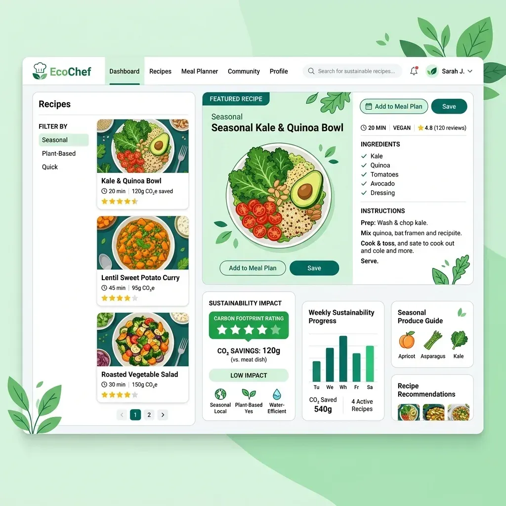

🍳 EcoChef — Dein intelligenter KI-Rezept-Zauberer🍳 EcoChef — Your Intelligent AI Recipe Wizard

EcoChef ist die IHK-Abschlussarbeit (Hybrid-App) – ein intelligenter Rezept-Assistent. Aus Kühlschrank-Zutaten generiert die Gemini-KI kreative, nachhaltige Rezeptideen inklusive Nährwertangaben, CO2-Einsparungsberechnungen und integriertem Kochmodus mit digitalem Vorlese-Assistenten.
EcoChef is the final IHK graduation project (hybrid app) – an intelligent recipe assistant. Using Gemini AI, it generates creative, sustainable recipes based on your ingredients, calculates nutritional values and CO2 savings, and includes a hands-free reading assistant.
AusgangslageStarting point
Zum Abschluss der Umschulung war ein IHK-Projekt von 80 Stunden verlangt. Ich wollte ein Problem aus dem Alltag lösen: Lebensmittel verderben, weil im Kühlschrank der Überblick fehlt und die Rezeptsuche mühsam ist.
The retraining ended with an IHK project of 80 hours. I wanted to solve an everyday problem: food spoils because there is no overview of the fridge and searching for recipes is tedious.
Meine RolleMy role
Ich habe das Projekt allein umgesetzt: Anforderungen, Entwurf, Implementierung, Tests, Dokumentation und die Präsentation vor dem Prüfungsausschuss.
I carried out the project on my own: requirements, design, implementation, tests, documentation and the presentation to the examination board.
ArchitekturentscheidungArchitecture decision
Die Oberfläche besteht aus Web Components mit Lit und TypeScript im strikten Modus, verpackt mit Cordova als Android-App und PWA. Der Gemini-Schlüssel liegt nicht im Client, sondern hinter einer Serverless Function als Proxy. Die Wahl des Frameworks habe ich in einer Nutzwertanalyse begründet (im IHK-Cockpit nachzurechnen).
The interface is built from web components with Lit and strict TypeScript, packaged with Cordova as an Android app and PWA. The Gemini key is not in the client but behind a serverless function acting as a proxy. I justified the framework choice with a utility analysis (reproducible in the IHK cockpit).
ErgebnisResult
Die App erzeugt aus Zutaten oder einem Kühlschrankfoto strukturierte Rezepte mit Nährwerten und CO₂-Einsparung, hat einen Kochmodus mit Sprachausgabe, eine Vorratskammer mit Scans und einen verschlüsselten Abgleich zwischen Geräten. Jest- und Playwright-Tests laufen in der CI. Das Projekt ist als Demo und im Quellcode öffentlich.
From ingredients or a fridge photo the app generates structured recipes with nutrition values and CO₂ savings. It has a cooking mode with speech output, a pantry with scans and an encrypted sync between devices. Jest and Playwright tests run in CI. The project is public as a demo and in source.
GelerntWhat I learned
KI-Antworten müssen wie Eingaben von außen behandelt werden: mit Schema, Validierung und Fallback. Außerdem hat sich gezeigt, dass Sicherheit (Schlüssel, Eingabe-Härtung, Ende-zu-Ende-Verschlüsselung) früh in den Entwurf gehört, nicht erst an den Schluss.
AI responses must be treated like input from outside: with schema, validation and fallback. It also showed that security (keys, input hardening, end-to-end encryption) belongs in the design early, not at the end.